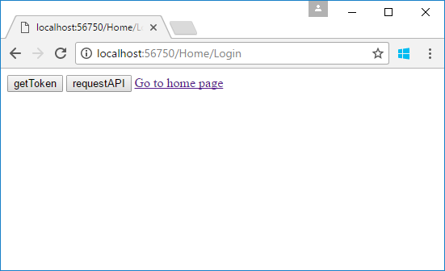
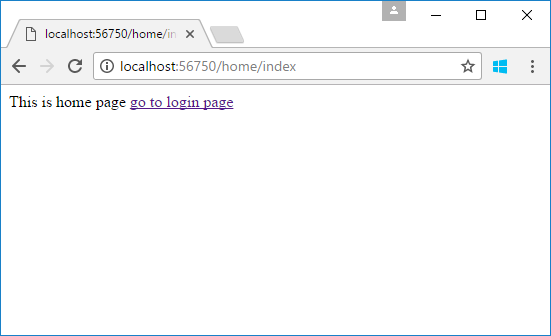

How to authenticate web pages using JWT token in ASP.NET Core
How to authenticate web pages using JWT token in ASP.NET Core
Introduction
This sample demonstrates how to authenticate web pages using JWT token in ASP.NET Core.
Sample prerequisites
• Visual Studio 2017 or above. [Visual Studio Home Page]
• Visual Studio enabled ASP.NET Core develop component.
Building the sample
Use Visual Studio to open the sample solution CSJWTAuthWebPageASP.NETCore, then press F6 Key to build the sample project.
Running the sample
• Use Visual Studio to open the sample solution CSJWTAuthWebPageASP.NETCore, then press F5 Key or select Debug -> Start Debugging from the menu.
• When the project is running, you will see below page in browser.

• Click getToken button.

• Then you can visit the authorization web api and web page.
• Click the requestAPI button.

• Click Go to home page link.

Using the code
When generating token, you should also add the token to cookie.
public JsonResult Get(User user)
{
var existUser = UserStorage.Users.FirstOrDefault(u => u.Username == user.Username && u.Password == user.Password);
if (existUser != null)
{
var requestAt = DateTime.Now;
var expiresIn = requestAt + TokenAuthOption.ExpiresSpan;
var token = GenerateToken(existUser, expiresIn);
Response.Cookies.Append("Authorization", $"Bearer {token}");
return Json(new
{
stateCode = 1,
requertAt = requestAt,
expiresIn = TokenAuthOption.ExpiresSpan.TotalSeconds,
accessToken = token
});
}
else
{
return Json(new { stateCode = -1, errors = "Username or password is invalid" });
}
}
private string GenerateToken(User user, DateTime expires)
{
var handler = new JwtSecurityTokenHandler();
ClaimsIdentity identity = new ClaimsIdentity(
new GenericIdentity(user.Username, "TokenAuth"),
new[] {
new Claim("ID", user.ID.ToString())
}
);
var securityToken = handler.CreateToken(new SecurityTokenDescriptor
{
Issuer = TokenAuthOption.Issuer,
Audience = TokenAuthOption.Audience,
SigningCredentials = TokenAuthOption.SigningCredentials,
Subject = identity,
Expires = expires
});
return handler.WriteToken(securityToken);
}
public JsonResult Get(User user) { var existUser = UserStorage.Users.FirstOrDefault(u => u.Username == user.Username && u.Password == user.Password); if (existUser != null) { var requestAt = DateTime.Now; var expiresIn = requestAt + TokenAuthOption.ExpiresSpan; var token = GenerateToken(existUser, expiresIn); Response.Cookies.Append("Authorization", $"Bearer {token}"); return Json(new { stateCode = 1, requertAt = requestAt, expiresIn = TokenAuthOption.ExpiresSpan.TotalSeconds, accessToken = token }); } else { return Json(new { stateCode = -1, errors = "Username or password is invalid" }); } } private string GenerateToken(User user, DateTime expires) { var handler = new JwtSecurityTokenHandler(); ClaimsIdentity identity = new ClaimsIdentity( new GenericIdentity(user.Username, "TokenAuth"), new[] { new Claim("ID", user.ID.ToString()) } ); var securityToken = handler.CreateToken(new SecurityTokenDescriptor { Issuer = TokenAuthOption.Issuer, Audience = TokenAuthOption.Audience, SigningCredentials = TokenAuthOption.SigningCredentials, Subject = identity, Expires = expires }); return handler.WriteToken(securityToken); }
Make a middleware class
public class JWTCookieAuthenticationMiddleware
{
private readonly RequestDelegate _next;
public static string LoginPagePath;
public JWTCookieAuthenticationMiddleware(RequestDelegate next)
{
this._next = next;
}
public async Task Invoke(HttpContext context)
{
var token = context.Request.Cookies["Authorization"];
if (!string.IsNullOrWhiteSpace(token))
{
context.Request.Headers["Authorization"] = token;
}
await _next(context);
if (context.Response.StatusCode == 401)
{
if (context.Request.IsAjaxRequest())
{
context.Response.ContentType = "application/json";
await context.Response.WriteAsync(JsonConvert.SerializeObject(
new { authenticated = false, tokenExpired = true }
));
}
else
{
context.Response.Redirect(LoginPagePath);
}
}
}
}
public static class JWTCookieAuthMiddlewareExtensions
{
public static IApplicationBuilder EnableJwtCookieAuthentication(this IApplicationBuilder app, string loginPagePath)
{
JWTCookieAuthenticationMiddleware.LoginPagePath = loginPagePath;
return app.UseMiddleware<JWTCookieAuthenticationMiddleware>();
}
}
Startup.cs/Configure method
app.EnableJwtCookieAuthentication(loginPagePath: "/Home/Login");
app.EnableJwtCookieAuthentication(loginPagePath: "/Home/Login");
Microsoft All-In-One Code Framework is a free, centralized code sample library driven by developers' real-world pains and needs. The goal is to provide customer-driven code samples for all Microsoft development technologies, and reduce developers' efforts in solving typical programming tasks. Our team listens to developers’ pains in the MSDN forums, social media and various DEV communities. We write code samples based on developers’ frequently asked programming tasks, and allow developers to download them with a short sample publishing cycle. Additionally, we offer a free code sample request service. It is a proactive way for our developer community to obtain code samples directly from Microsoft.